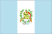

{kind=link}


![[Country map of Guatemala]](../maps/gt-map.jpg)
| Guatemala |  |
|
| | |
| Introduction |
Background: Guatemala was freed of Spanish colonial rule in 1821. During the second half of the 20th century, it experienced a variety of military and civilian governments as well as a 36-year guerrilla war. In 1996, the government signed a peace agreement formally ending the conflict, which had led to the death of more than 100,000 people and had created some 1 million refugees.
| Geography |
Location: Middle America, bordering the Caribbean Sea, between Honduras and Belize and bordering the North Pacific Ocean, between El Salvador and Mexico
Geographic coordinates: 15 30 N, 90 15 W
Map references: Central America and the Caribbean
Area:
total:
108,890 sq km
land:
108,430 sq km
water:
460 sq km
Area - comparative: slightly smaller than Tennessee
Land boundaries:
total:
1,687 km
border countries:
Belize 266 km, El Salvador 203 km, Honduras 256 km, Mexico 962 km
Coastline: 400 km
Maritime claims:
continental shelf:
200-m depth or to the depth of exploitation
exclusive economic zone:
200 nm
territorial sea:
12 nm
Climate: tropical; hot, humid in lowlands; cooler in highlands
Terrain: mostly mountains with narrow coastal plains and rolling limestone plateau (Peten)
Elevation extremes:
lowest point:
Pacific Ocean 0 m
highest point:
Volcan Tajumulco 4,211 m
Natural resources: petroleum, nickel, rare woods, fish, chicle, hydropower
Land use:
arable land:
12%
permanent crops:
5%
permanent pastures:
24%
forests and woodland:
54%
other:
5% (1993 est.)
Irrigated land: 1,250 sq km (1993 est.)
Natural hazards: numerous volcanoes in mountains, with occasional violent earthquakes; Caribbean coast subject to hurricanes and other tropical storms
Environment - current issues: deforestation; soil erosion; water pollution; Hurricane Mitch damage
Environment - international agreements:
party to:
Antarctic Treaty, Biodiversity, Climate Change, Climate Change-Kyoto Protocol, Desertification, Endangered Species, Environmental Modification, Hazardous Wastes, Law of the Sea, Marine Dumping, Nuclear Test Ban, Ozone Layer Protection, Ship Pollution, Wetlands
signed, but not ratified:
Antarctic-Environmental Protocol
Geography - note: no natural harbors on west coast
| People |
Population: 12,639,939 (July 2000 est.)
Age structure:
0-14 years:
42% (male 2,735,107; female 2,622,412)
15-64 years:
54% (male 3,411,575; female 3,413,932)
65 years and over:
4% (male 213,791; female 243,122) (2000 est.)
Population growth rate: 2.63% (2000 est.)
Birth rate: 35.05 births/1,000 population (2000 est.)
Death rate: 6.92 deaths/1,000 population (2000 est.)
Net migration rate: -1.89 migrant(s)/1,000 population (2000 est.)
Sex ratio:
at birth:
1.05 male(s)/female
under 15 years:
1.04 male(s)/female
15-64 years:
1 male(s)/female
65 years and over:
0.88 male(s)/female
total population:
1.01 male(s)/female (2000 est.)
Infant mortality rate: 47.03 deaths/1,000 live births (2000 est.)
Life expectancy at birth:
total population:
66.18 years
male:
63.53 years
female:
68.96 years (2000 est.)
Total fertility rate: 4.66 children born/woman (2000 est.)
Nationality:
noun:
Guatemalan(s)
adjective:
Guatemalan
Ethnic groups: Mestizo (mixed Amerindian-Spanish or assimilated Amerindian - in local Spanish called Ladino), approximately 56%, Amerindian or predominantly Amerindian, approximately 44%
Religions: Roman Catholic, Protestant, indigenous Mayan beliefs
Languages: Spanish 60%, Amerindian languages 40% (more than 20 Amerindian languages, including Quiche, Cakchiquel, Kekchi, Mam, Garifuna, and Xinca)
Literacy:
definition:
age 15 and over can read and write
total population:
55.6%
male:
62.5%
female:
48.6% (1995 est.)
| Government |
Country name:
conventional long form:
Republic of Guatemala
conventional short form:
Guatemala
local long form:
Republica de Guatemala
local short form:
Guatemala
Data code: GT
Government type: constitutional democratic republic
Capital: Guatemala
Administrative divisions: 22 departments (departamentos, singular - departamento); Alta Verapaz, Baja Verapaz, Chimaltenango, Chiquimula, El Progreso, Escuintla, Guatemala, Huehuetenango, Izabal, Jalapa, Jutiapa, Peten, Quetzaltenango, Quiche, Retalhuleu, Sacatepequez, San Marcos, Santa Rosa, Solola, Suchitepequez, Totonicapan, Zacapa
Independence: 15 September 1821 (from Spain)
National holiday: Independence Day, 15 September (1821)
Constitution:
31 May 1985, effective 14 January 1986
note:
suspended 25 May 1993 by former President SERRANO; reinstated 5 June 1993 following ouster of president; amended November 1993
Legal system: civil law system; judicial review of legislative acts; has not accepted compulsory ICJ jurisdiction
Suffrage: 18 years of age; universal (active duty members of the armed forces may not vote)
Executive branch:
chief of state:
President Alfonso Antonio PORTILLO Cabreras (since 14 January 2000); Vice President Juan Francisco REYES Lopez (since 14 January 2000); note - the president is both the chief of state and head of government
head of government:
President Alfonso Antonio PORTILLO Cabreras (since 14 January 2000); Vice President Juan Francisco REYES Lopez (since 14 January 2000); note - the president is both the chief of state and head of government
cabinet:
Council of Ministers named by the president
elections:
president elected by popular vote for a four-year term; election last held 7 November 1999; runoff held 26 December 1999 (next to be held NA November 2003)
election results:
Alfonso Antonio PORTILLO Cabreras elected president; percent of vote - Alfonso Antonio PORTILLO Cabreras (FRG) 68%, Oscar BERGER Perdomo(PAN) 32%
Legislative branch:
unicameral Congress of the Republic or Congreso de la Republica (113 seats; members are elected by popular vote to serve four-year terms)
elections:
last held on 7 November 1999 (next to be held in November 2003)
election results:
percent of vote by party - NA; seats by party - FRG 63, PAN 37, ANN 9, DCG 2, UD/LOV 1, PLP 1
note:
for the 7 November 1999 election, the number of congressional seats was increased from 80 to 113
Judicial branch: Supreme Court of Justice or Corte Suprema de Justicia; additionally the Court of Constitutionality is presided over by the president of the Supreme Court, judges are elected for a five-year term by Congress
Political parties and leaders: Christian Democratic Party or DCG [Vinicio CEREZO Arevalo]; Democratic Union or UD [Jose CHEA Urruela]; Green Party or LOV [leader NA]; Guatemalan National Revolutionary Union or URNG [Jorge SOTO]; Guatemalan Republican Front or FRG [Efrain RIOS Montt]; National Advancement Party or PAN [Hector CIFUENTES]; New Guatemalan Democratic Front or FDNG [Rafael ARRIAGA Martinez]; New Nation Alliance or ANN [leader NA]; Progressive Liberator Party or PLP [leader NA]
Political pressure groups and leaders: Agrarian Owners Group or UNAGRO; Alliance Against Impunity or AAI; Committee for Campesino Unity or CUC; Coordinating Committee of Agricultural, Commercial, Industrial, and Financial Associations or CACIF; Mutual Support Group or GAM
International organization participation: BCIE, CACM, CCC, ECLAC, FAO, G-24, G-77, IADB, IAEA, IBRD, ICAO, ICFTU, ICRM, IDA, IFAD, IFC, IFRCS, IHO, ILO, IMF, IMO, Intelsat, Interpol, IOC, IOM, ISO (correspondent), ITU, LAES, LAIA (observer), NAM, OAS, OPANAL, OPCW, PCA, UN, UNCTAD, UNESCO, UNIDO, UNU, UPU, WCL, WFTU, WHO, WIPO, WMO, WToO, WTrO
Diplomatic representation in the US:
chief of mission:
Ambassador (vacant)
chancery:
2220 R Street NW, Washington, DC 20008
telephone:
[1] (202) 745-4952
FAX:
[1] (202) 745-1908
consulate(s) general:
Chicago, Houston, Los Angeles, Miami, New York, and San Francisco
Diplomatic representation from the US:
chief of mission:
Ambassador Prudence BUSHNELL
embassy:
7-01 Avenida de la Reforma, Zone 10, Guatemala City
mailing address:
APO AA 34024
telephone:
[502] (2) 31-15-41
FAX:
[502] (2) 33-48-77
Flag description: three equal vertical bands of light blue (hoist side), white, and light blue with the coat of arms centered in the white band; the coat of arms includes a green and red quetzal (the national bird) and a scroll bearing the inscription LIBERTAD 15 DE SEPTIEMBRE DE 1821 (the original date of independence from Spain) all superimposed on a pair of crossed rifles and a pair of crossed swords and framed by a wreath
| Economy |
Economy - overview: The agricultural sector accounts for one-fourth of GDP, two-thirds of exports, and half of the labor force. Coffee, sugar, and bananas are the main products. Manufacturing and construction account for one-fifth of GDP. Since assuming office in January 1996, former President ARZU worked to implement a program of economic liberalization and political modernization. The signing of the peace accords in December 1996, which ended 36 years of civil war, removed a major obstacle to foreign investment. In 1998, Hurricane Mitch caused relatively little damage to Guatemala compared to its neighbors. Remaining challenges include beefing up government revenues, negotiating further assistance from international donors, and increasing the efficiency and openness of both government and private financial operations. Growth should remain at the same level in 2000 provided world agricultural prices do not plunge.
GDP: purchasing power parity - $47.9 billion (1999 est.)
GDP - real growth rate: 3.5% (1999 est.)
GDP - per capita: purchasing power parity - $3,900 (1999 est.)
GDP - composition by sector:
agriculture:
23%
industry:
20%
services:
57% (1999 est.)
Population below poverty line: 75%
Household income or consumption by percentage share:
lowest 10%:
0.6%
highest 10%:
46.6% (1989)
Inflation rate (consumer prices): 6.8% (1999 est.)
Labor force: 3.32 million (1997 est.)
Labor force - by occupation: agriculture 50%, industry 15%, services 35% (1999 est.)
Unemployment rate: 7.5% (1999 est.)
Budget:
revenues:
$NA
expenditures:
$NA, including capital expenditures of $NA
Industries: sugar, textiles and clothing, furniture, chemicals, petroleum, metals, rubber, tourism
Industrial production growth rate: NA%
Electricity - production: 3.085 billion kWh (1998)
Electricity - production by source:
fossil fuel:
26.42%
hydro:
66.61%
nuclear:
0%
other:
6.97% (1998)
Electricity - consumption: 2.914 billion kWh (1998)
Electricity - exports: 6 million kWh (1998)
Electricity - imports: 51 million kWh (1998)
Agriculture - products: sugarcane, corn, bananas, coffee, beans, cardamom; cattle, sheep, pigs, chickens
Exports: $2.4 billion (f.o.b., 1999)
Exports - commodities: coffee, sugar, bananas, fruits and vegetables, meat, apparel, petroleum, electricity
Exports - partners: US 48%, El Salvador 10%, Honduras 6%, Germany 5%, Costa Rica 4% (1997)
Imports: $4.5 billion (c.i.f., 1999)
Imports - commodities: fuels, machinery and transport equipment, construction materials, grain, fertilizers, electricity
Imports - partners: US 46%, Mexico 13%, El Salvador 5%, Venezuela 5%, Japan 4% (1997)
Debt - external: $4.4 billion (1998 est.)
Economic aid - recipient: $212 million (1995)
Currency: 1 quetzal (Q) = 100 centavos
Exchange rates: quetzales (Q) per US$1 - 7.8829 (January 2000), 7.3856 (1999), 6.3947 (1998), 6.0653 (1997), 6.0495 (1996), 5.8103 (1995)
Fiscal year: calendar year
| Communications |
Telephones - main lines in use: 342,000 (1996)
Telephones - mobile cellular: 29,999 (1995)
Telephone system:
fairly modern network centered in the city of Guatemala
domestic:
NA
international:
connected to Central American Microwave System; satellite earth station - 1 Intelsat (Atlantic Ocean)
Radio broadcast stations: AM 101, FM 32, shortwave 15 (1998)
Radios: 835,000 (1997)
Television broadcast stations: 6 (plus 17 repeaters) (1997)
Televisions: 640,000 (1997)
Internet Service Providers (ISPs): 7 (1999)
| Transportation |
Railways:
total:
884 km (102 km privately owned)
narrow gauge:
884 km 0.914-m gauge (single track)
Highways:
total:
13,100 km
paved:
3,616 km (including 140 km of expressways)
unpaved:
9,484 km (1996 est.)
Waterways: 260 km navigable year round; additional 730 km navigable during high-water season
Pipelines: crude oil 275 km
Ports and harbors: Champerico, Puerto Barrios, Puerto Quetzal, San Jose, Santo Tomas de Castilla
Merchant marine: none (1999 est.)
Airports: 477 (1999 est.)
Airports - with paved runways:
total:
11
2,438 to 3,047 m:
3
1,524 to 2,437 m:
1
914 to 1,523 m:
5
under 914 m:
2 (1999 est.)
Airports - with unpaved runways:
total:
466
2,438 to 3,047 m:
1
1,524 to 2,437 m:
9
914 to 1,523 m:
124
under 914 m:
332 (1999 est.)
| Military |
Military branches: Army, Navy, Air Force
Military manpower - military age: 18 years of age
Military manpower - availability:
males age 15-49:
3,000,599 (2000 est.)
Military manpower - fit for military service:
males age 15-49:
1,959,050 (2000 est.)
Military manpower - reaching military age annually:
males:
137,607 (2000 est.)
Military expenditures - dollar figure: $124 million (FY98)
Military expenditures - percent of GDP: 0.7% (FY98)
| Transnational Issues |
Disputes - international: territory in Belize claimed by Guatemala; precise alignment of boundary in dispute
Illicit drugs: transit country for cocaine shipments; minor producer of illicit opium poppy and cannabis for the international drug trade; active eradication program in 1996 effectively eliminated the cannabis crop; proximity to Mexico makes Guatemala a major staging area for drugs (cocaine shipments)